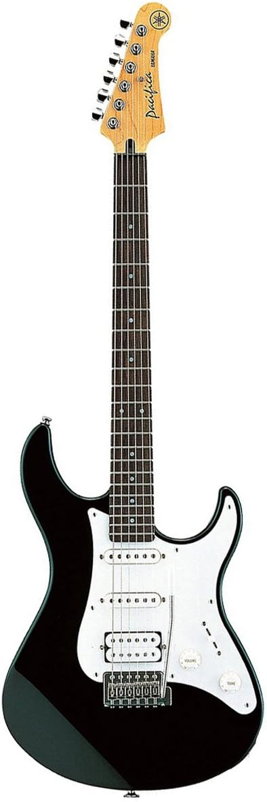
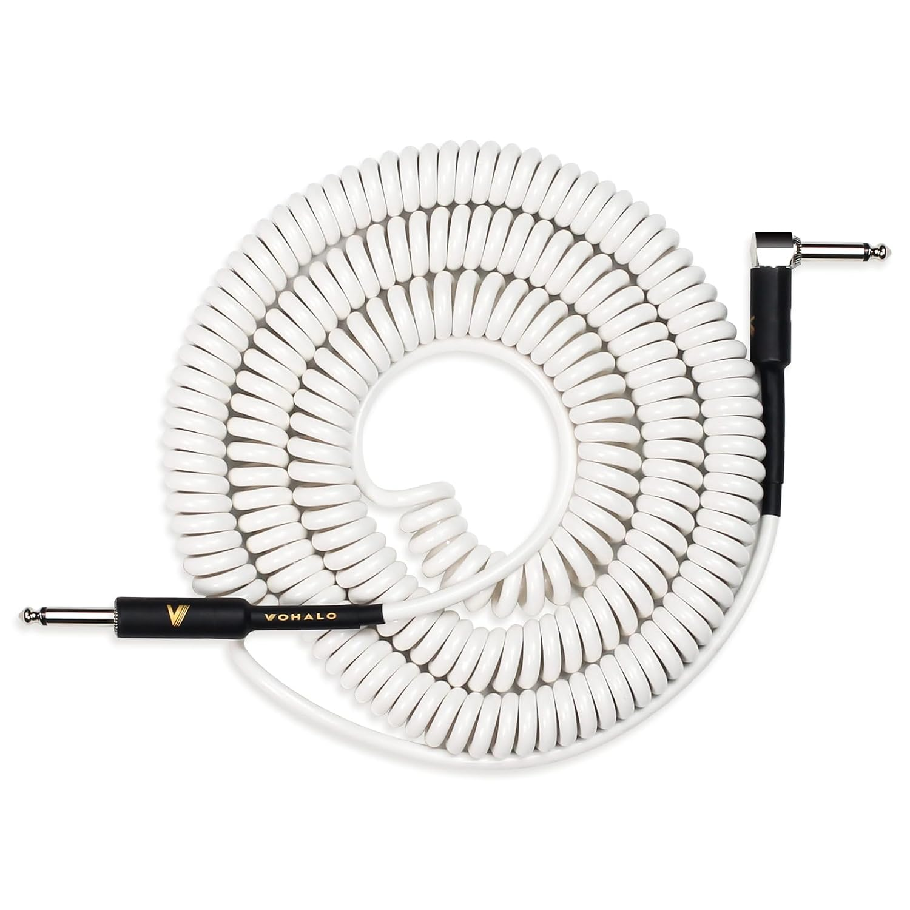
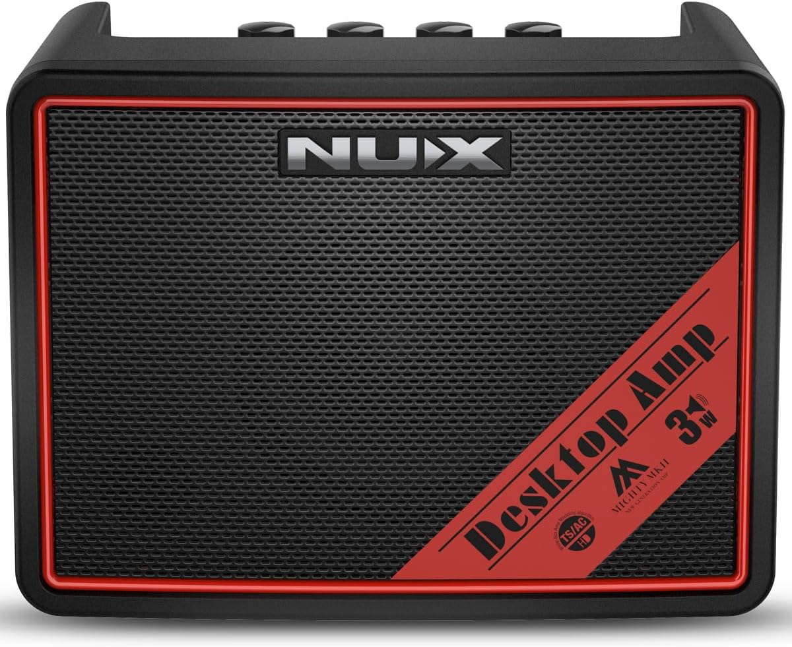

Electric Guitar Gear
Here, We will be going into the proper gear to get started. First, we will begin with electric guitars.
For a budget friendly beginner guitar, you can't go wrong with the Yamaha Pacifica Series PAC012. Yamaha makes great gear for the price without having to break the bank for more expensive name brands. It comes with 2 single coil pickups for a thinner tone and one humbucker pickup for a thicker tone. It also features a volume knob, tone knob, and multi-pickup selector for more control over your sound.
Since this is an electric guitar we are talking about, you will also need an instrument cable and something to serve as a beginning practice amp to get you started. You can play unplugged, but most of the fun to be had here is plugging in and going at it.
Speaking of plugging it in, my suggestion for a budget friendly practice amp is the NUX Mighty Lite BT MKII. Not only will this work with guitar, but it will also work for bass if that's the route you wish to go. This practice amp is what's called an amp simulator, meaning it has many features to simulate different effects, amplifiers, cabinets, all together there is so much to play with here so you can get an idea of what the more expensive gear has to offer.



Bass Gear
Now if you are more interested in Bass guitar, then great news! The only gear recommendation that changes here is the guitar itself. The cable will work just fine and luckily the NUX Mighty Lite BT MKII also handles bass just fine, with just one caveat: the sound. I know, that sounds like a drag, half the fun of bass is rumbling along, but never fear, headphones are here! If you plug in a good pair of headphones or earbuds you can get some of that fun right back. I won't be going into what headphones, IEMs, or earbuds I would recommend because quite frankly, shopping for the absolute right pair of headphones is something I tear my own hair out over. I recommend finding a pair that works just fine for you and going along with them!
Now, what budget-friendly beauty can we look at here? I have the perfect option that is not only quite functional and widely well-received, but budget-friendly too! Introducing the Ibanez GSR200. This is a wonderful instrument with everything you need as a beginner to bass and in fact, was the first guitar/bass I ever owned personally. With this guitar, I practiced, learned, joined a band (even though I wasn't that amazing of a player at the time), and played gigs. It's a real workhorse that does it all. What better than a cheap, fun instrument to help you discover just how awesome bass is?
Acoustic Gear
WIP